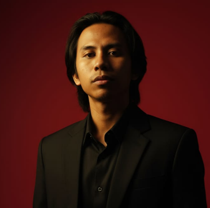

Halo — saya Andhika
Saya mahasiswa & pengajar teknik komputer yang tertarik pada pengembangan aplikasi berbasis Python, UI/UX sederhana, dan solusi bisnis makanan sehat. Saya suka membuat proyek yang mudah dipahami dan bisa langsung dipakai.
Python
OOP
HTML & CSS
JavaScript
UI/UX
Cybersecurity
Proyek Pilihan
Lihat semua →Inventaris Gudang (OOP Python)
Implementasi sistem inventaris dengan class Barang, Gudang, dan Stok. Fitur: pencarian, sorting, dan manajemen stok.
Aplikasi Catatan Keuangan (Mobile UI)
Desain layar: Login, Dashboard, Profil. Fokus pada UX sederhana untuk pengguna pemula.
Playlist Manager (Double Linked List)
Program Python yang mengelola playlist lagu menggunakan double linked list, plus operasi CRUD dan navigasi.
Blog singkat
1. Membangun Program Inventaris Gudang dengan OOP Python
Sebagai mahasiswa yang sering mengerjakan proyek Python, salah satu karya terbaik Saya adalah aplikasi inventaris gudang berbasis Object-Oriented Programming (OOP). Program ini memakai tiga class utama: Barang, Gudang, dan Stok, termasuk penerapan fitur searching, sorting, dan stack untuk riwayat perubahan data. Tujuan saya membuat aplikasi ini adalah supaya pengelolaan barang jadi lebih rapih, mudah dipahami, dan bisa digunakan siapa saja yang baru belajar OOP. Saya selalu percaya bahwa program yang baik itu bukan cuma berjalan, tapi juga logis dan mudah dipelihara.2. Merancang Aplikasi Catatan Keuangan Mobile dengan UI/UX Minimalis
saya pernah membuat desain aplikasi catatan keuangan sederhana di Figma. Fokus utama saya adalah membuat tampilan bersih, minimalis, dan tidak membuat pusing pengguna baru. Halaman yang saya buat:* Login
* Dashboard
* Profil
Selain itu, saya belajar bahwa UI/UX itu bukan cuma soal estetika, tapi tentang bagaimana membuat aplikasi yang benar-benar memudahkan hidup orang.
3. Mengolah Playlist Lagu dengan Double Linked List di Python
Salah satu proyek Python favorit Saya adalah aplikasi playlist berbasis Double Linked List. Saya Buat fitur:* Tambah lagu
* Hapus lagu
* Navigasi maju/mundur
* Menampilkan playlist secara dinamis
Proyek ini mengajarkan Saya bahwa struktur data itu sangat penting, terutama kalau aplikasi butuh fleksibilitas dalam berpindah-pindah data.
4. Minat saya di Dunia Cybersecurity
Saya punya ketertarikan khusus pada dunia cybersecurity. Buat saya, keamanan digital itu bukan cuma tentang hacking atau serangan, tapi tentang memahami bagaimana sistem bekerja, apa celahnya, dan gimana cara mencegahnya. Walaupun masih dalam tahap belajar, Saya sering membaca dan mempraktikkan hal dasar seperti:* mengenal protokol jaringan,
* mencoba memahami kerentanan umum,
* dan melihat praktik keamanan pada aplikasi sehari-hari.
Ke depannya saya ingin lebih serius mendalami bidang ini.
5. Mengajar di Pondok Pesantren: Perjalanan Berharga
Selain ngoding, Saya juga mengajar di Pondok Pesantren. Mata pelajaran yang saya pegang meliputi:* Tahsin
* Adab
* Matematika
* Geografi
Bagi saya, mengajar bukan sekadar menyampaikan materi, tapi belajar bagaimana sabar, jelas, dan menginspirasi anak-anak. Ini jadi pengalaman yang paling banyak mengubah cara saya berpikir dan berinteraksi.
6. Ide Bisnis Kuliner Sehat Berbasis Melinjo: HealthyMelo
Saya juga tertarik di dunia bisnis, khususnya makanan sehat. Makanya, Saya ngembangin konsep produk bernama HealthyMelo, yaitu makanan sehat berbahan dasar melinjo. Tujuan saya:* bikin makanan yang enak tapi tetap sehat,
* memanfaatkan bahan lokal,
* sambil tetap menjaga nilai nutrisi.
Saya percaya gaya hidup sehat bisa dimulai dari hal kecil yang sederhana.
7. Personal Branding: Membangun Citra Profesional di Media Sosial
Saya lagi membangun personal branding sendiri di sosial media. Fokus utamanya:* teknologi
* edukasi
* produktivitas
* motivasi memperbaiki diri
Bagi Saya, personal branding bukan sekadar konten, tapi tentang menunjukkan jati diri sambil tetap bermanfaat buat orang lain.